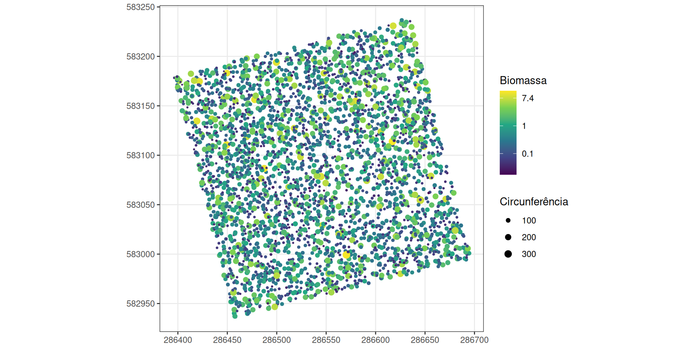
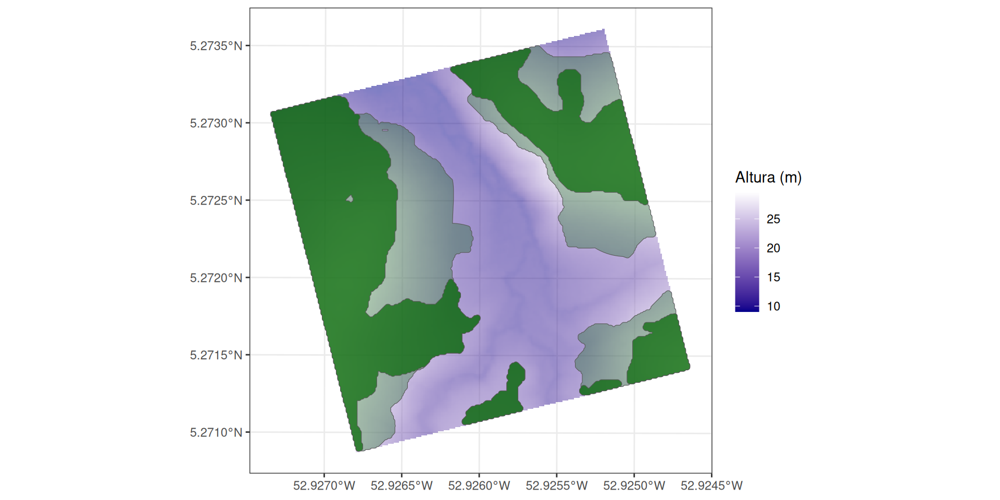
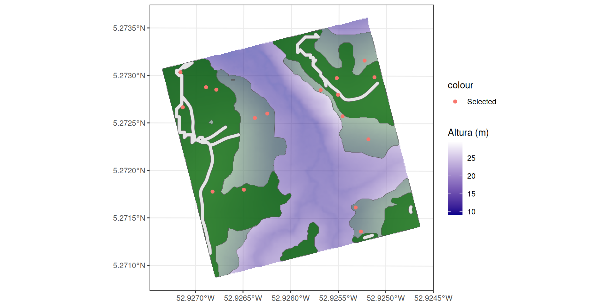
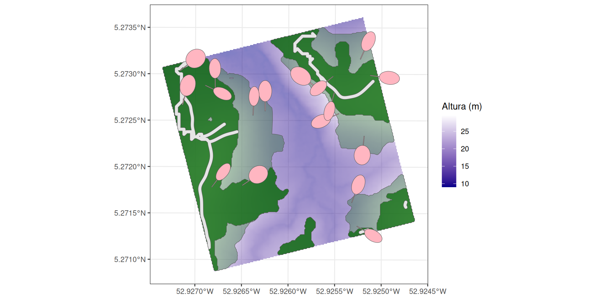

Seminário LoggingLab
Oct 15, 2024
Introdução
Texto breve.
O que o pacote faz?
Simulação de corte seletivo usando dados de inventário florestal.

O que o pacote faz?
- preparação de dados
- trilhas principais
- áreas colhíveis
- seleção de árvores
- trilhas secundárias
- corte de árvores
- adjacência da trilha secundária
- quantificação de volume
Instalação do pacote
Usaremos o pacote LoggingLab para R (Badouard et al. 2024) para simular a extração de madeira de impacto reduzido em uma floresta tropical. O pacote deve ser instalado a partir de seu repositório no Github, pois ainda não está no CRAN.
Outros pacotes R
Usaremos o tidyverse para manipular tabelas e criar gráficos, e o sf para manipular objetos espaciais.
Entradas
Bla.
- Inventário: inventários de árvores da parcela registrada
- Máscara do lote: os limites da área a ser explorada
- Dados da espécie: dados específicos para cada espécie
- Alometria volumétrica: os parâmetros de alometria a serem calculados
Inventário
O que é isso?
Inventário
As colunas exigidas pelo LoggingLab são:
Forest: o nome da floresta para aplicar a fórmula de volume correspondente.idTree: um identificador exclusivo para cada árvore.XutmeYutm: as coordenadas de cada árvore.CodeAlive: árvore viva ou morta.Family,Genus,Species: dados botânicos.CircCorr: circunferência de cada árvore.
Inventário
O inventário do lote 6 de Paracou está disponível dentro LoggingLab.
Forest Plot PlotArea SubPlot idTree Protocole Xfield Yfield Xutm
1 Paracou 6 6.25 1 100726 Guyafor 13.5 201.0 286420.1
2 Paracou 6 6.25 1 100729 Guyafor 19.0 196.5 286426.4
3 Paracou 6 6.25 1 100739 Guyafor 13.5 182.0 286424.8
4 Paracou 6 6.25 1 100741 Guyafor 9.5 179.5 286421.6
5 Paracou 6 6.25 1 100747 Guyafor 14.5 167.5 286429.3
6 Paracou 6 6.25 1 100750 Guyafor 18.0 169.0 286432.3
Yutm UTMZone Lat Lon Family Genus Species
1 583135.4 22 5.272669 -52.92713 Annonaceae Oxandra asbeckii
2 583132.2 22 5.272642 -52.92707 Fabaceae Eperua grandiflora
3 583116.8 22 5.272502 -52.92709 Fabaceae Bocoa prouacensis
4 583113.4 22 5.272471 -52.92712 Celastraceae Maytenus sp.1-CAY
5 583102.9 22 5.272376 -52.92705 Chrysobalanaceae Licania membranacea
6 583105.2 22 5.272397 -52.92702 Chrysobalanaceae Licania canescens
BotaSource BotaCertainty VernName CensusYear CensusDateCertainty
1 Bota 4 muamba 2016 TRUE
2 Bota 4 Eperua grandiflora 2016 TRUE
3 Bota 4 boco 2016 TRUE
4 Bota 3 lebi tongo 2016 TRUE
5 Bota 4 santi koko 2016 TRUE
6 Bota 4 santi koko 2016 TRUE
CodeAlive MeasCode Circ CircCorr CorrCode
1 TRUE 0 39.5 39.5 0
2 TRUE 0 114.0 114.0 0
3 TRUE 0 48.0 48.0 0
4 TRUE 0 123.0 123.0 0
5 TRUE 0 54.0 54.0 0
6 TRUE 0 88.0 88.0 0Inventário

Máscara do lote
A máscara do lote define os limites da área a ser registrada.
Por que?
Máscara do lote
A máscara do lote 6 de Paracou está disponível dentro LoggingLab.
Dados de espécies
SpeciesCriteria contém dados específicos de cada espécie. As colunas são:
CommercialLevel: Nível de interesse econômico. 1: principal espécie econômica, 2 ou mais: espécies registradas com o objetivo de diversificação, 0: espécies cujo gênero é coberto por um nome comercial, mas que não são registradas.MinFD: Diâmetro mínimo de corte, em centímetros.UpMinFD: Diâmetro mínimo de corte aprimorado (caso de povoamento excessivamente rico), em centímetros.MaxFD: Diâmetro máximo de corte, em centímetros.Aggregative: Caráter agregador da espécie. Se forTRUE, as árvores isoladas não serão cortadas.
Dados de espécies
Dados de espécies de Guiana Francesa são disponível dentro LoggingLab.
# A tibble: 6 × 8
CommercialName Genus Species CommercialLevel MinFD UpMinFD MaxFD Aggregative
<chr> <chr> <chr> <dbl> <dbl> <dbl> <dbl> <lgl>
1 st martin rouge Andira spp 2 55 60 120 FALSE
2 bamba apici Aniba spp 2 55 60 120 FALSE
3 bagasse Bagas… guiane… 2 55 60 120 FALSE
4 assao Baliz… pedice… 2 55 60 120 FALSE
5 dokali Brosi… parina… 2 55 60 120 FALSE
6 satiné rubané Brosi… rubesc… 2 55 60 120 FALSE Alometria volumétrica
ForestZoneVolumeParametersTable contém os parâmetros de alometria a serem calculados.
\[Volume = aCoef + bCoef \times DBH^2\]Por que?
Alometria volumétrica
Alometria volumétrica de Guiana Francesa são disponível dentro LoggingLab.
Forest Zone aCoef bCoef
1 Acarouany West -0.061776 8.83580
2 BAFOG West -0.061776 8.83580
3 Kaw East -0.084516 10.46132
4 Laussat West -0.061776 8.83580
5 Montagne_Plomb Central -0.035829 8.76340
6 Montagne_Tortue East -0.084516 10.46132Simulação de registro detalhado
Texto breve.
Validar o inventário
As árvores que não estão na área registrada ou que são muito pequenas para serem consideradas são excluídas.
loggingparameters() define todos os parâmetros de registro. Consulte sua ajuda (?loggingparameters). Os valores padrão são os usados na Guiana Francesa.
Validar o inventário
Como os dados já estavam limpos, não houve muitas alterações.
Calcular as dimensões da árvore
Calcule as dimensões da árvore (altura da árvore, do tronco e da copa, diâmetro da copa, volume colhível, densidade da madeira e biomassa).
TreeHarvestableVolume TrunkHeight TreeHeight CrownHeight CrownDiameter
1 0.1027084 8.272213 14.65595 6.383735 2.174181
2 1.1181093 10.811462 27.40065 16.589191 7.746662
3 0.1687473 9.203739 16.78716 7.583417 3.038558
4 1.3075022 10.860306 28.35561 17.495301 9.048966
5 0.2230879 9.613873 18.14034 8.526472 3.590780
6 0.6517747 10.576502 24.12416 13.547658 6.510423
WoodDensity AGB
1 0.7700000 0.1003184
2 0.7040000 1.3401159
3 1.0536667 0.2275608
4 0.7131944 1.6277207
5 0.8800000 0.2590981
6 0.8800000 0.8877632Calcular as dimensões da árvore

Principais trilhas de derrapagem
Gere a trilha principal do terreno inventariado, como linhas na borda e fora do terreno.
Por que ?
Principais trilhas de derrapagem
Definição de área colhível
Defina as zonas de colheita e as zonas acessíveis por máquinas dentro da parcela.
Por padrão, uma unidade de prospecção é uma área conectada a uma trilha de caminhão ou a uma trilha principal de skid, com uma inclinação de menos de 27%, evitando planícies e o sistema de água (buffer de 30 m).
Definição de área colhível
Usamos um cenário manual para poder alterar os argumentos facilmente. O guincho é definido como 2, ou seja, a garra é usada, se possível (6 m de extensão), e o cabo é usado até 40 m.
HarvestableArea <- harvestableareadefinition(
topography = DTMParacou,
creekverticaldistance = CreekDistances$distvert,
creekhorizontaldistance = CreekDistances$disthorz,
maintrails = MainTrails,
plotmask = PlotMask,
scenario = "manual",
winching = "2",
advancedloggingparameters = loggingparameters()
)Definição de área colhível
As áreas verdes claras podem ser colhidas. As verdes escuras podem ser colhidas por máquinas.

Seleção de árvores
Selecionar árvores para colheita e árvores futuras e de reserva.
As árvores podem ser colhidas se:
- Pertencem a espécies de primeira categoria econômica ou mais, se houver diversificação.
- O DBH estiver entre o MinFD e o MaxFD.
- Não estiverem isoladas (>100 m por padrão) de outros indivíduos da mesma espécie no caso de espécies agregadas.
- Estão localizadas em declives < 22%.
- Estão fora das trilhas principais.
Se o volume colhível for maior que o volume objetivo e a diversificação não tiver sido escolhida, o MinFD apenas da primeira espécie de classificação econômica será aumentado. Se a diversificação for permitida, o MinFD das espécies de primeiro e segundo níveis econômicos será aumentado. Em seguida, as árvores a serem colhidas são escolhidas em ordem decrescente de volume, até que o volume objetivo seja atingido.
Seleção de árvores
Se o volume extraível for muito baixo, a diversificação pode ser aplicada (specieslax = TRUE): as árvores de todas as classificações comerciais são selecionadas em ordem decrescente de volume até que o volume objetivo seja atingido, ou a extração pode continuar apesar de um volume objetivo não atingido ou ser abandonada (objectivelax = FALSE).
inventory <- inventory %>%
commercialcriteriajoin(SpeciesCriteria)
TreeSelection <- inventory %>%
treeselection(
topography = DTMParacou,
speciescriteria = SpeciesCriteria,
scenario ="manual",
objective = 30,
fuel = "2",
winching = "2",
diversification = TRUE,
specieslax = FALSE,
objectivelax = TRUE,
harvestablearea = HarvestableArea$HarvestableArea,
plotslope = HarvestableArea$PlotSlope,
maintrails = MainTrails,
harvestablepolygons = HarvestableArea$HarvestablePolygons,
advancedloggingparameters = loggingparameters()
)Seleção de árvores
Bla.
base + geom_sf(data = TreeSelection$HarvestableTreesPoints, aes(colour = "Harvestable")) +
geom_sf(data = TreeSelection$SelectedTreesPoints, aes(colour = "Selected")) +
geom_sf(data = TreeSelection$FutureTreesPoints, aes(colour = "Future")) +
geom_sf(data = TreeSelection$ReserveTreesPoints, aes(colour = "Reserve"))Trilhas secundárias
A partir das trilhas de arraste principais, desenhe trilhas de arraste secundárias nas zonas acessíveis às máquinas, permitindo coletar as árvores selecionadas com as máquinas escolhidas (argumento winching). O layout é otimizado para reduzir a distância percorrida, respeitando as restrições topográficas e evitando árvores a serem protegidas.
As trilhas de arraste (principal e secundária) permitem que a madeira seja transportada do talhão para as estradas de caminhões.
As trilhas de arraste secundárias:
- têm 4 m de largura (
ScndTrailWidth), - têm 22% de inclinação máxima em seu comprimento (
MaxTrailCenterlineSlope), - têm 4% de inclinação lateral máxima, levada em conta se houver dados Lidar disponíveis (
MaxTrailCrossSlope).
Elas evitam:
- as árvores a serem cortadas
- as árvores com um DBH de mais de 50 cm (
BigTrees) - as árvores reservadas.
Eles se juntam, em ordem decrescente de prioridade:
- grupos em ordem decrescente de abundância de árvores,
- aqueles com a menor distância até a trilha mais próxima.
Trilhas secundárias
ScndTrailOutputs <- secondtrailsopening(
topography = DTMParacou,
plotmask = PlotMask,
maintrails = MainTrails,
plotslope = HarvestableArea$PlotSlope,
harvestablepolygons = HarvestableArea$HarvestablePolygons,
machinepolygons = HarvestableArea$MachinePolygons,
treeselectionoutputs = TreeSelection,
scenario = "manual",
winching = "2",
fuel = "0",
advancedloggingparameters = loggingparameters()
)
inventory <- ScndTrailOutputs$inventoryEssa etapa pode levar algum tempo.
Trilhas secundárias
Bla.

Corte de árvores
Simular a derrubada da árvore, com o sucesso ou fracasso da direção da queda da árvore, pé para a trilha, com um ângulo para a trilha e evitando as árvores a serem protegidas, conforme desejado. Se a madeira combustível for explorada, a árvore será direcionada com a copa para a trilha (se a orientação for bem-sucedida) para que possa ser recuperada com uma garra.
A derrubada da árvore cria uma árvore (incluindo a copa) no solo, com dimensões calculadas por alometrias específicas (advancedloggingparameters). O processo depende do cenário. Por exemplo, cenários sem madeira para combustível implicam:
- com 60% (
TreefallSuccessProportion) de probabilidade: base da árvore em direção à trilha mais próxima. - com 40% de probabilidade: queda aleatória.
Corte de árvores
Bla.

Quantificar os volumes registrados
Calcule o volume de madeira colhida em árvores saudáveis exploradas para madeira e nas árvores ocas, se elas também forem colhidas para lenha.
$TimberLoggedVolume
[1] 107.9554
$NoHollowTimberLoggedVolume
[1] 93.61721Quantificar os volumes registrados
Os detalhes da produção por espécie estão no inventário.
# A tibble: 7 × 4
CommercialName trees_n volume CommercialLevel
<chr> <int> <dbl> <dbl>
1 chawari 1 4.11 2
2 gonfolo gris 1 3.56 1
3 grignon franc 4 21.6 1
4 maho noir 4 16.5 2
5 wacapou 1 3.61 1
6 wapa 9 39.7 2
7 wapa courbaril 1 4.68 2Para saber mais
Texto breve
Uma única simulação
Todas as etapas de simulação podem ser incluídas em uma única função para economizar tempo.
Rslt <- loggingsimulation1(
Paracou6_2016,
plotmask = PlotMask,
topography = DTMParacou,
creekverticaldistance = CreekDistances$distvert,
creekhorizontaldistance = CreekDistances$disthorz,
speciescriteria = SpeciesCriteria,
volumeparameters = ForestZoneVolumeParametersTable,
scenario = "manual",
objective = 30,
fuel = "0",
winching = "2",
directionalfelling = "2",
diversification = TRUE,
specieslax = FALSE,
objectivelax = TRUE,
crowndiameterparameters = ParamCrownDiameterAllometry,
advancedloggingparameters = loggingparameters()
)Várias simulações podem ser executadas pela função loggingsimulation() para levar em conta a estocasticidade com o argumento iter (número de simulações) e cores (número de núcleos de computador usados para paralelizar o cálculo).
Resultados
Retorna um resumo das saídas da função de simulação de registro.
inventory : Paracou6_2016
scenario : manual
objective : 30 m3/harvestable ha
fuel : 0
diversification : TRUE
winching : 2
directionalfelling : 2
specieslax : FALSE
objectivelax : TRUE
Harvestable area : 3.75 ha
Objective volume : 112.4 m3
Initial harvestable volume : 179.4 m3, 47.9 m3/harvestable ha
Timber logged volume : 112.2 m3, 29.9 m3/harvestable ha
No hollow timber logged volume : 112.2 m3, 29.9 m3/harvestable ha
Timber extracted volume (timber volume after purge : 96.5 m3, 25.8 m3/harvestable ha
Error in round(x$FuelWoodBiomass, digits = 1) :
argument non numérique pour une fonction mathématiqueCenários
Os cenários reúnem os principais parâmetros de gerenciamento.
Eles são usados para definir a área explorável, as árvores a serem cortadas e a modelagem de trilhas secundárias.
Mais.
Cenários
As colunas são:
Type: O nome do cenário.SpatialDataType: o tipo de dados espaciais (Lidar ou SRTM).Objective: Volume objetivo por hectare.Diversification: Permitir o corte de outras espécies além das principais espécies comerciais.Winching: Método de guincho. Sem cabo ou garra = “0”, somente cabo = “1”, garra + cabo = “2”.DirectionalFelling: “0” = não utilizado, ‘1’ = apenas para evitar danos a árvores futuras e de reserva, ‘2’ = evitar danos a árvores futuras e de reserva + orientação da trilha.
Todas as funções permitem scenario = “manual”: nesse caso, todos os argumentos devem ser adicionados manualmente. Seu nome é o mesmo das colunas.
Cenários
LogingLab inclui cenários predefinidos que correspondem a diferentes versões de registro de impacto reduzido.
# A tibble: 6 × 6
Type SpatialDataType Objective Diversification Winching DirectionalFelling
<chr> <chr> <chr> <lgl> <fct> <fct>
1 RIL1 SRTM 20-25 FALSE 0 0
2 RIL2bro… LIDAR 20-25 FALSE 0 0
3 RIL2 LIDAR 20-25 FALSE 1 0
4 RIL3 LIDAR 25-30 TRUE 2 2
5 RIL3fuel LIDAR 25-30 TRUE 2 2
6 RIL3fue… LIDAR 25-30 TRUE 2 2 Conclusão
Texto breve